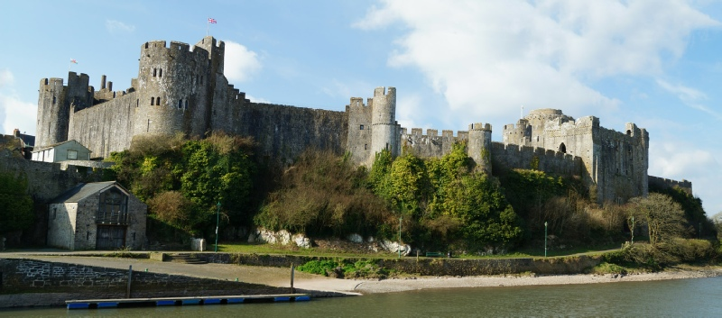
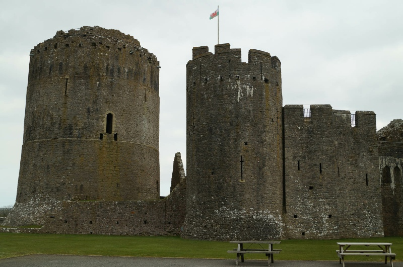

PEMBROKE CASTLE, SA71 4LA
GETTING THERE
Postcode: SA71 4LA
Lat/Long: 51.6770N 4.9209W
Notes: There is ample (pay in Summer months) car parking around the town. Parking can be achieved just a short walk from the entrance to the castle and the remains of the town walls are in close proximity.
WHAT IS THERE TO SEE?
A large and impressive medieval castle including a great round tower - one of the most impressive examples of its type still in existence. The castle boasts complete curtain walls with turrets and some exhibits including limited reconstructions. The town walls also remain to an extent.
VISIT OFFICIAL SITE (Opens in new window)
Castle is run by Pembrokeshire Castle Trust .
ADDITIONAL NOTES
1. Unlike other Norman castles Pembroke had no motte - presumably being situated on the rocky Wogan was deemed sufficient and the castle certainly proved resilient enough to withstand sieges associated with a Welsh uprising in both 1094 and 1096.
2. The builder of Pembroke Castle - Roger de Montgomery, Earl of Shrewsbury - owned extensive lands in the Welsh Border Marches with his powerbase centred on Montgomery Castle .
Looming over the town, Pembroke Castle is a hugely impressive medieval fortress. Surrounded on three sides by the Pembroke River it was the central hub for Norman control of South West Wales. In 1648 the castle declared for King Charles and became the flashpoint that started the Second Civil War.
HISTORY OF PEMBROKE CASTLE
Situated on the Wogan, a peninsula of land that extends into the Pembroke River, the site of the castle has been fortified since the Iron Age and was latter probably the site of a Roman Fort. The area remained in use throughout the Dark Ages and was initially exempted from the Norman incursions into Wales due to an alliance between King William I (the Conqueror) and King Rhys ap Tewdwr. This came to an abrupt end in 1093 when King Rhys was killed in a border skirmish and a Norman baron, Roger de Montgomery, seized the opportunity to take South West Wales for himself. He invaded and built castles at Cardigan and Pembroke - the latter was initially built in timber probably utilising the earthworks of the earlier Iron Age fort.
Following a rebellion in 1102, Pembroke Castle was seized by Henry I and it was he who established the associated town. It remained a Royal possession until 1138 when King Stephen created the Earldom and granted it to one of his followers, a Gilbert de Clare (Strongbow). He was succeeded by his son who utilised Pembroke as a base to launch an invasion of Ireland in 1169. This unilateral action incurred the wrath of Henry II who intervened personally in the Irish campaign and confiscated Pembroke. Given briefly to Prince John (later John I), the castle was returned to the William Marshal, Earl of Pembroke in 1199. It was he who commenced the construction of the stone castle including the Great Keep.
During the Wars of Welsh Independence, Pembroke Castle acted as a secure base from which to control the South West for the English Crown. Thereafter the military uses of Pembroke castle declined until the Civil War where it acted as base for Parliamentary Forces. But in 1648 the Pembroke's Governor declared for the King starting the second Civil War; the castle was besieged by Parliamentary forces under Oliver Cromwell and was surrendered in July 1648.
© Copyright 2016 | Terms and Conditions (inc Cookie Policy) | Contact Us | Mobile Site
Recovered original photographs, plans and images

